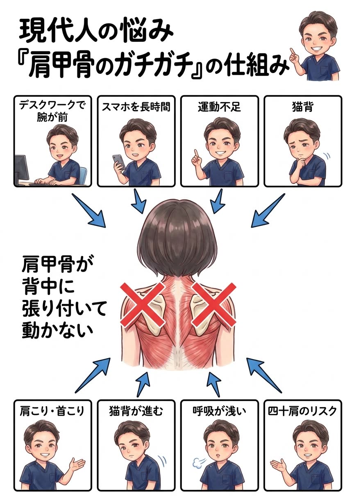

肩甲骨は本来、背中の上を自由に滑る「浮いた骨」。それが周りの筋肉ごとガチガチに張り付いてしまうと、肩こり・猫背・頭痛の温床になります。

肩甲骨は、背骨や肋骨と関節でガッチリ噛み合っているわけではありません。実はほぼ筋肉だけで背中に“ぶら下がっている”自由度の高い骨で、本来は腕の動きに合わせて背中の上を滑るように、上下・左右・回転と大きく動きます。この動きの土台があるからこそ、腕はスムーズに上がるのです。
ところがデスクワークやスマホでは、両腕を体の前に出したまま何時間も固定されます。このとき胸側の筋肉（大胸筋・小胸筋）は縮こまり、肩甲骨を前・外へ引っぱり続けます。すると肩甲骨は「外に開いて前に傾いた位置」でロックされ、背中側で肩甲骨を引き寄せる筋肉（僧帽筋の中部・下部、菱形筋）は引き伸ばされたまま弱って、うまく働けなくなります。
使われない筋肉は血流が滞り、コリ固まります。こうして肩甲骨は、縮んだ前側と伸びて固まった後ろ側に挟まれ、まるで背中に“貼り付いた”ように動かなくなる——これが「肩甲骨のガチガチ」の正体です。

肩甲骨が開いて前に傾くと、胸は閉じ、背中は丸まります。つまり肩甲骨のガチガチと猫背・巻き肩は表裏一体。さらにその猫背の土台には骨盤の後傾があります。骨盤が後ろに倒れると背骨が丸まり、頭が前に出て、肩甲骨はますます開く——という悪循環です。だから肩甲骨まわりだけをほぐしても、この連鎖が残っている限り、また戻ってきやすいのです。

「肩甲骨を回す体操をしましょう」——よく言われます。でも、考えてみてください。縮んで固まった胸側の筋肉をそのままにして、自分でグルグル回すだけで、開いた肩甲骨は元の位置に戻るでしょうか？ 残念ながら、それだけでは戻らないんです。
体操できれいに動くのは、その瞬間だけ。硬く縮んだ筋肉と、伸びて弱った筋肉のアンバランスを放置したまま、動かすことだけで正しい位置を保つのは、誰にとってもとても難しいことなんです。
では、どうすればいいのか。答えはひとつです。体の仕組みと原因を突き止め、縮んだ筋肉はゆるめ、弱った筋肉は働かせる——その体に合った施術と姿勢改善を「継続」する。これに尽きます。 その場しのぎのストレッチではなく、原因に合った正しいことを、続ける——それだけが、ガチガチの肩甲骨から本当に卒業する道です。
正直にお話しします。原因である縮んだ胸側の筋肉や、開いた肩甲骨・骨盤へのアプローチは、必ずしも“気持ちいい場所”への施術ではありません。でもそれこそが、繰り返す肩甲骨のこりを根本から変えるために本当に必要な一手です。とはいえ、今つらい背中・肩の張りを我慢してもらうつもりはありません。「今のつらさへの対応」と「原因への一手」を、必ずセットで行います。気持ちいいマッサージ“だけ”で終われば、それは対症療法。その場は楽でも、原因が残っている限りまた戻ってきてしまうからです。
原因は、あなたの体そのものではなくあなたの“生活”の中にあります。どんな机で、どんな腕の置き方で、どれだけスマホを見て、どれだけ体を動かしていないか——この生活習慣そのものに、根本改善のカギがあります。だから当院は、症状だけでなくあなたの生活そのものをとことん深くお聞きし、原因が潜む習慣にメスを入れます。ここまで踏み込む接骨院・整体は多くありません。これが当院の考える“本当の根本治療”です。
ボキボキが苦手・怖い方へ。刺激の少ないやさしい矯正で、無理なく肩甲骨まわりを整えます。お子さまやご年配の方にも安心です。
「ボキボキしてスッキリしたい」「あの爽快感が好き」という方へ。しっかり音の鳴るダイナミックな矯正も、当院の得意技です。
「ボキボキしてくれる整体を探していた」という方も、ぜひご相談ください。ご希望とお身体の状態に合わせて、最適な方をお選びいただけます。
肩甲骨を前に引っぱる大胸筋・小胸筋、固まった僧帽筋・菱形筋を一枚ずつ丁寧にゆるめ、肩甲骨の“ロック”を外して「今のつらさ」を軽くします。
ゆるめた肩甲骨を的確に動かし、可動域を取り戻します。弱っていた背中側の筋肉が働く、正しいポジションへ導きます。
肩甲骨が開く土台である猫背・巻き肩や骨盤の歪みも矯正。机・モニター・スマホの高さ、セルフケアまで、あなたの生活に合わせて具体的にお伝えし、継続をサポートします。

肩まわりのお悩み・お仕事での腕の使い方・生活習慣まで丁寧に伺います。原因は人によって全く違うため、ここに一番時間をかけます。

肩甲骨がどれだけ動くか、左右差はあるか、胸側の硬さや猫背の程度を検査。腕の上がり方の変化を施術後と比べます。

深層筋までゆるめて肩甲骨の動きを回復。猫背・骨盤矯正と組み合わせ、動きをキープするセルフストレッチもお伝えします。

名前のインパクトから痛そうに聞こえますが、実際は肩甲骨まわりの筋肉をゆるめながら少しずつ動きを取り戻していく施術です。強い痛みを伴う施術は行いませんのでご安心ください。
肩こり・首こりの軽減、猫背・巻き肩の改善、頭痛の軽減、呼吸が深くなる、腕が上がりやすくなる、といった変化が期待できます。
軽度であれば有効ですが、長年固まった肩甲骨は自力で動かせる範囲に限界があります。まず施術で動く状態を取り戻し、セルフストレッチで維持するのが効率的です。